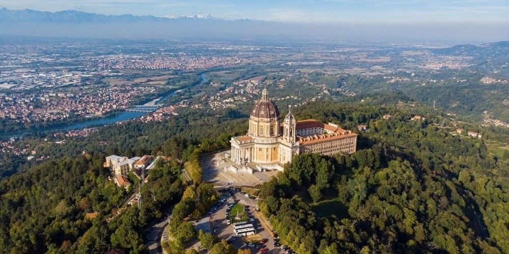
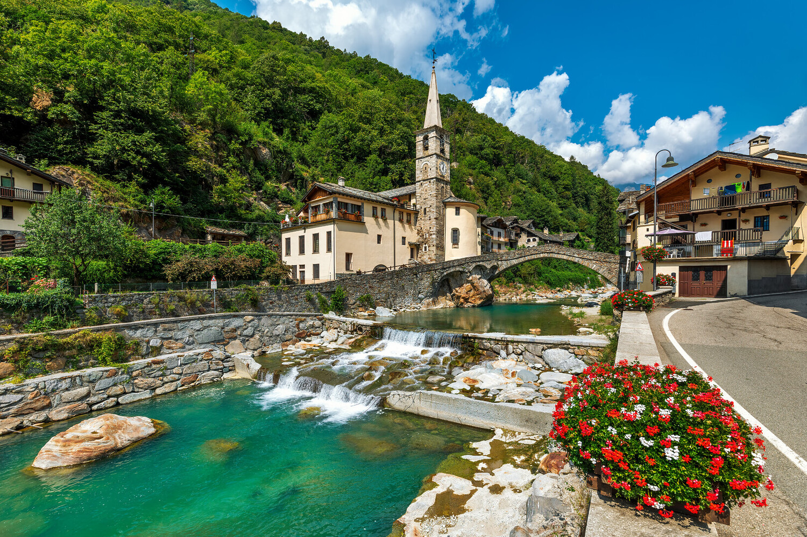
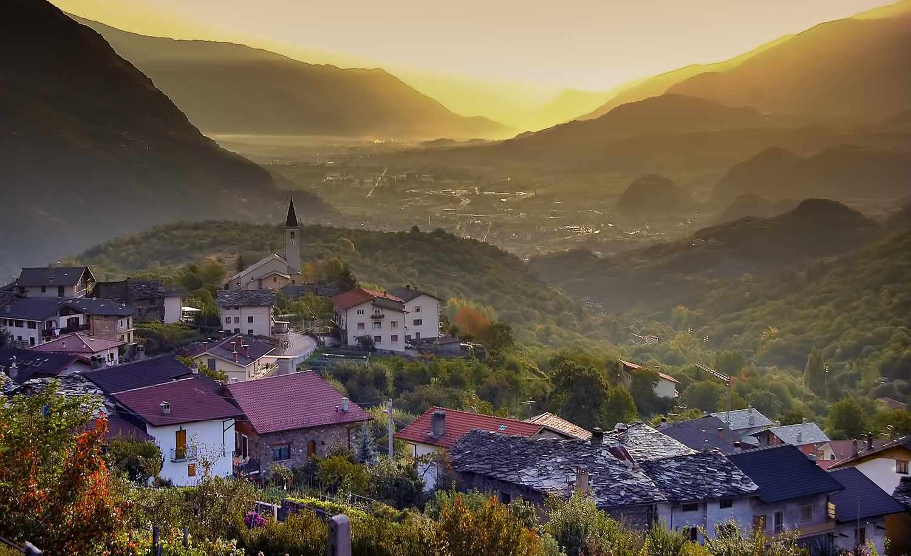

Torinó
Olaszország rejtett ékköve
Torino, az Alpok lábánál fekvő elegáns város, Észak-Olaszország egyik kulturális és gazdasági központja.
Híres történelmi épületeiről, kávéháziról, a híres Mole Antonellianáról és a legendás Juventus futballcsapatról.
A város egyedülálló hangulatát a barokk paloták, a tágas terek és a finom piemonti ételek teszik felejthetetlenné.


